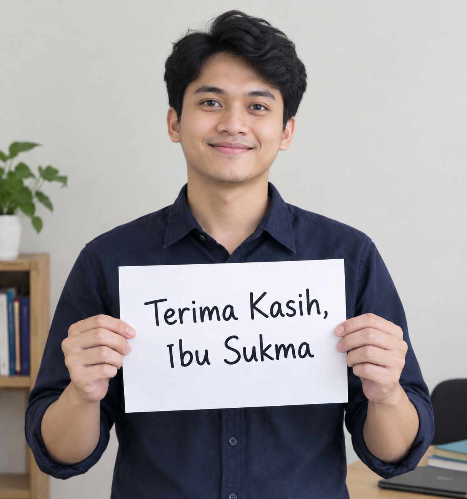

＋Foto angkatan 01angkatan-01.jpg
01album pertama
Hari-hari di sekolah
Awal dari banyak cerita.
Sebuah album kecil penuh kenangan
Ada nama yang tak pernah hilang meski bel sekolah telah lama berlalu. Ada nasihat yang baru kami pahami setelah dewasa. Album ini kami buat untuk mengingat semuanya—dan untuk mengatakan satu hal yang mungkin belum cukup sering kami ucapkan.
Baca surat kami ♡

Dulu murid Ibu. Kini tumbuh dewasa.
Dulu, kami datang ke kelas dengan cerita masing-masing. Ada yang bersemangat, ada yang sering bingung, ada pula yang mungkin membuat Ibu menghela napas diam-diam. Ibu tetap hadir, mengajar, mengingatkan, dan percaya bahwa kami bisa tumbuh.
Sekarang, kami menjalani kehidupan di luar gerbang sekolah. Kami bekerja, mengejar mimpi, menghadapi tantangan, dan belajar banyak hal baru. Di antara semua itu, ada pelajaran dari Ibu yang masih kami bawa.
Dari murid-murid Ibu yang kini telah bekerja dan menjalani kehidupan masing-masing. Meski waktu membawa kami ke arah yang berbeda, rasa terima kasih ini tetap sama.
assets/video/kenangan-ibu-sukma.mp4
Senyum yang tersimpan di foto lama
Foto-foto ini menjadi pengingat bahwa kelas mungkin telah kosong, tetapi cerita dan persahabatan yang tumbuh di dalamnya tetap hidup.

Awal dari banyak cerita.

Tumbuh bersama, mengenang bersama.

Wajah berubah, rasa hormat tetap sama.

Bekal dari kelas Ibu ikut melangkah.
sebuah catatan kecil untuk diingat
“Kami mungkin lupa beberapa materi pelajaran, tetapi kami tidak akan lupa bagaimana rasanya pernah diajar oleh Ibu.”— Murid-murid Ibu Sukma ✳
Ibu Sukma yang kami hormati,
Terima kasih telah membagikan ilmu, kesabaran, dan perhatian kepada kami. Terima kasih untuk nasihat yang mungkin dahulu terasa sederhana, tetapi kini sering teringat ketika kami menghadapi kehidupan yang sesungguhnya.
Kami tahu, menjadi guru bukan hanya tentang berdiri di depan kelas. Ada waktu, tenaga, dan hati yang Ibu berikan agar kami punya bekal untuk melangkah. Tidak semua kebaikan itu sempat kami balas atau ucapkan ketika masih menjadi murid.
Di masa purnabakti ini, semoga hari-hari Ibu dipenuhi kesehatan, ketenangan, kebahagiaan, dan kesempatan untuk menikmati hal-hal yang Ibu cintai. Semoga semua kebaikan yang pernah Ibu tanam tumbuh kembali menjadi kebahagiaan dalam hidup Ibu.
Dengan hormat, doa, dan rasa sayang,
murid-murid Ibu, sepanjang masa.
Sampai kapan pun...
Selamat menikmati babak baru, Ibu Sukma. Terima kasih telah membantu kami tumbuh.
Kembali ke halaman awal ↑